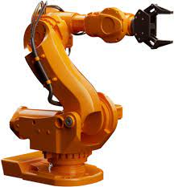
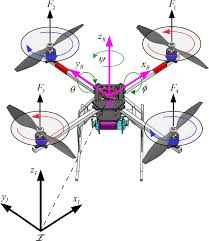
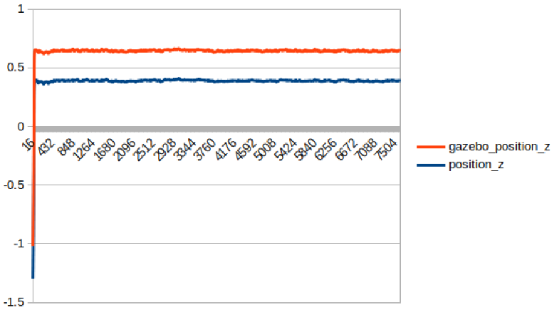
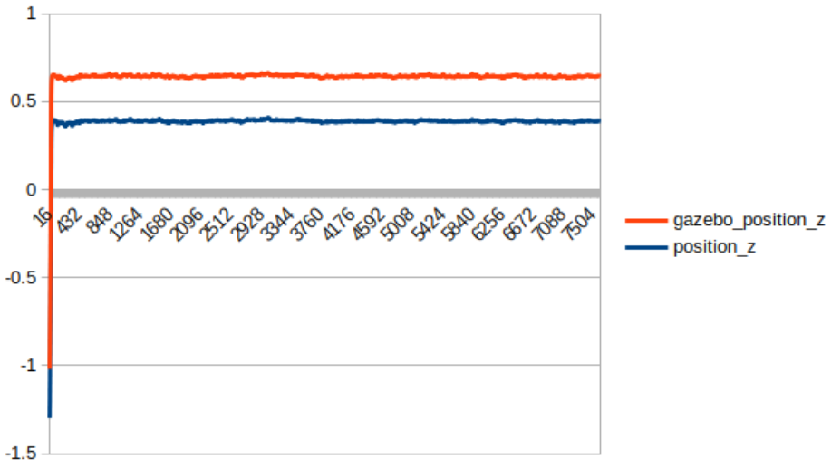
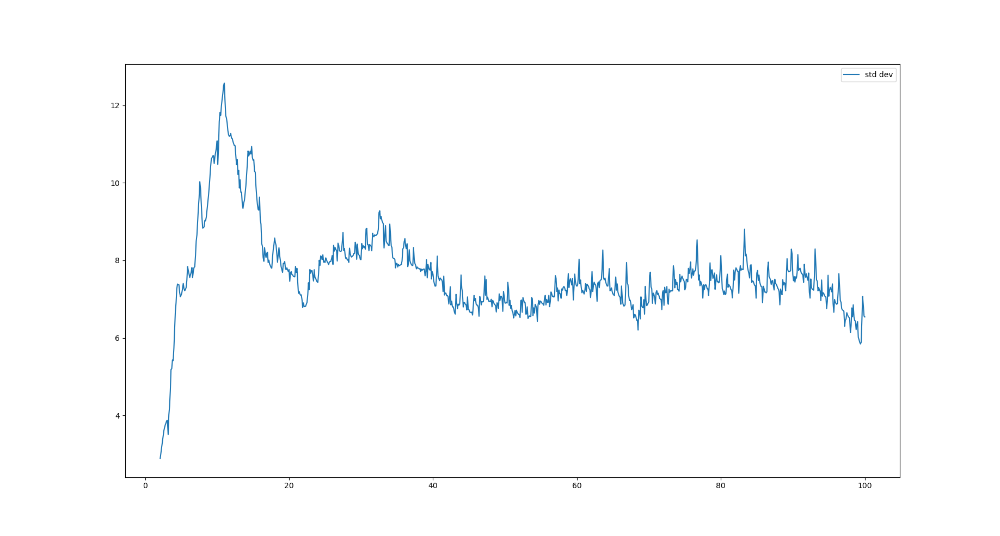
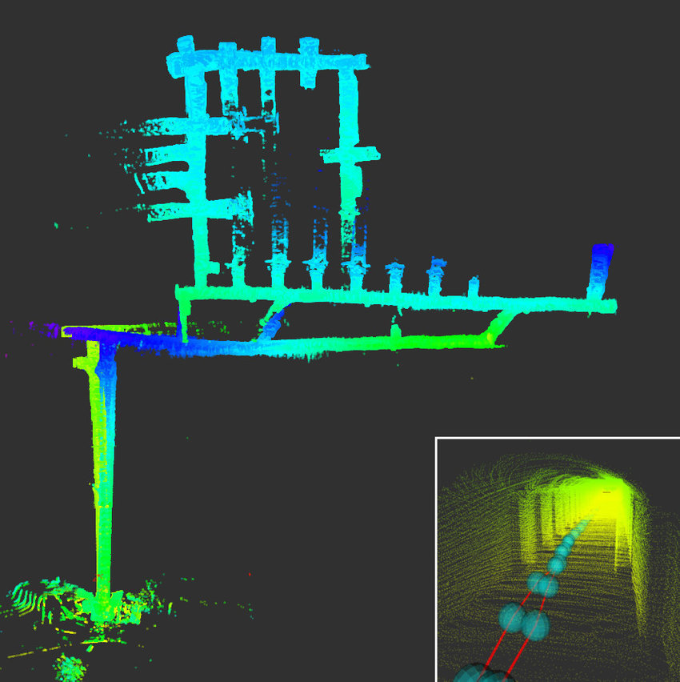

Research Summary
I like to focus on problems which closely impact our community and my work till now has been focused on understanding the nature of these problems. I am interested in solutions which build on reinforcement learning, optimal control theory, and simulation.
Interests: Control Theory, Optimization, Mathematical Modelling, Reinforcement Learning, Autonomous Vehicles, and Legged Robotics.
Publications
-

Abstract: Robotic manipulators, a complex research topic consisting of nonlinear dynamics and control, have a wide industrial application that requires stability and high precision of the end-effector. Apart from the internal forces, external disturbances of the manipulator can cause a deviation from its desired state, affecting the overall stability and trajectory during the process. Therefore, a robust feedback control system is essential to ensure accurate maneuvering to the desired target position. Position controllers such as the Proportional-Integral-Derivative (PID) controller and the Linear Quadratic Regulator (LQR) controller are generally used for all robotic operations. In this work, we have implemented force-based impedance control using the manipulator’s simplified Lagrangian-Euler dynamics (LE) and we have compared the performance of 3 degrees of freedom (DoF) articulated robotic manipulators by applying the three control algorithms in MATLAB-Simulink and ROS-Gazebo simulators. The manipulator’s performance is tested for point-to-point motion subjected to disturbances and the simulation results shows that the impedance control has a higher tolerance to high perturbations than the classical PID and optimal LQR controllers. The results also demonstrate that the force-based controller is more suitable for higher-order linked systems in industrial applications than the optimal controller.
-
Abstract: Legged robots can traverse challenging terrain, use perception to plan their safe foothold positions, and navigate the environment. Such unique mobility capabilities make these platforms a perfect candidate for scenarios such as search and rescue, inspection, and exploration tasks. While traversing through such terrains, the robot’s instability is a significant concern. Many times the robot needs to switch gaits depending on its environment. Due to the complex dynamics of quadruped robots, classical PID control fails to provide high stability. Thus, there is a need for advanced control methods like the Model Predictive Control (MPC) which uses the system model and the nature of the terrain in order to predict the stable body pose of the robot. The controller also provides correction to any external disturbances that result in a change in the desired behavior of the robot. The MPC controller is designed in MATLAB, for full body torque control. The controller performance was verified on Boston Dynamics Spot in Webots simulator. The robot is able to provide correction for external perturbations up to 150 N and also resist falls till 80 cm.
-
Abstract: Hyperloop is a high-speed ground-based transportation system utilizing sealed tubes, with the aim of ultimately transporting passengers between metropolitan cities in efficiently designed autonomous capsules. In recent years, the design and development of sub-scale prototypes for these Hyperloop pods has set the foundation for realizing more practical and scalable pod architectures. This paper proposes a practical, power and space optimized on-board electronics architecture, coupled with an end-to-end computationally efficient p ose e stimation algorithm. Considering the high energy density and discharge rate of on-board batteries, this work additionally presents a robust system for fault detection, protection and management of batteries, along with the design of the surrounding electrical system. Performance evaluation and verification o f p roposed a lgorithms a nd circuits has been carried out by software simulations using both Python and Simulink.
-

Abstract: This paper aims to design an optimal stability controller for a point to point trajectory tracking 3 degree of freedom (DoF) articulated manipulator. The Denavit Hartenberg (DH) convention is used to obtain the forward and inverse kinematics of the manipulator. The manipulator dynamics are formulated using the Lagrange Euler (LE) method to obtain a nonlinear system. The complicated nonlinear equations obtained are then linearized in order to implement the optimal linear quadratic regulator (LQR). The simulations are performed in MATLAB and Simulink and the optimal controller's performance is tested for various conditions and the results are presented. The results obtained prove the superiority of LQR over conventional PID control.
-

Abstract: This paper presents a comparison between the Proportional Integral Derivative (PID), a classical controller, and Linear Quadratic Regulator (LQR), an optimal controller, acting on a quadrotor model to control its translational and rotational movements. The complicated dynamic model of a quadrotor based on Newtonian and Euler's laws and fundamental physics principles is simplified to derive a linear mathematical model. The derivation gives the equations that govern a quadrotor's motion concerning the body frame and the inertial frame in the state-space form. This linearized model is utilized to develop the controllers. The performance of the PID control and the optimal regulator established on LQR is compared in various conditions subjected to the Quadrotor model.
-
Abstract: A convolutional neural network (CNN) approach is used to implement a level 2 autonomous vehicle by mapping pixels from the camera input to the steering commands. The network automatically learns the maximum variable features from the camera input, hence requires minimal human intervention. Given realistic frames as input, the driving policy trained on the dataset by NVIDIA and Udacity can adapt to real-world driving in a controlled environment. The CNN is tested on the CARLA open-source driving simulator. Details of a beta-testing platform are also presented, which consists of an ultrasonic sensor for obstacle detection and an RGBD camera for real-time position monitoring at 10Hz. RRT*-Connect algorithm is used for path planning. Arduino Mega and Raspberry Pi are used for motor control and processing respectively to output the steering angle, which is converted to angular velocity for steering.
Experience
-

Summary: The work involves building a biped robot for research purposes. More details on this soon.
-

Summary: The work involves the use of Solidworks ELectrical to design the hardware control system of the purification plant. More details on this soon.
-
Abstract: The work focuses on achieving gait transitions and stable locomotion of the Stoch quadruped robot. A convex model predictive control along with a state estimator and whole body impulse controller were used to achieve the desired stability. The model was verified in ROS-Gazebo simulator and then on the Stochlite hardware. Follow the project link for simulation and hardware testing videos. The State estimator results can be found below.

 

-

Abstract: The research aims at achieving stable locomotion using torque based Central Pattern Generators for the Daisy Hexapod by Hebi Robotics exposed to constant perturbations on an unknown terrain. A convex ptimization technique known as gradient descent control was used to achive low computational stability for the robot. The dynamic and kinematic model was formulated. A torque controlled CPG for locomotion and an Impedance Controller was built for increased leg stability on uneven terrain. The simulations were later carried out in a PyBullet and Webots simulation environment. The graph of the system converging to zero standard deviation (stable locomotion) can be seen below:

-

Summary: The development of an autonomous UV-C sterilization robot involved the design of a PCB for efficient and safe power distribution in the robot's UV arm. The arm was automated, enabling it to perform the sterilization procedure. A mecanum drive system was implemented and programmed to monitor real-time trajectories, ensuring accurate movement control even in manual mode. These advancements have resulted in a highly efficient and reliable UV-C sterilization robot, reducing the need for human intervention while maintaining thorough disinfection.
Projects
-

Summary: This paper presents a comprehensive study on addressing traffic waves caused by human driving behavior. Innovative strategies leveraging autonomous vehicles (AVs) and Lagrangian controllers are proposed to reduce fuel consumption, enhance traffic flow, and revolutionize traffic control. The study investigates the dynamics of traffic waves and explores solutions including intelligent transportation systems, optimized signal timings, and advanced control techniques. Experimental results demonstrate the effectiveness of Lagrangian controllers, incorporating the "slow-in, fast-out" approach, in reducing fuel consumption, excessive braking, and velocity standard deviation. The use of Follower Stopper control and PI saturation control demonstrates promising results on the ring road experiment conducted. The paper demonstrates that one autonomous vehicle programmed using these controllers is sufficient to dampen the traffic waves.
-

Summary: This work presents three distinct projects related to robotics and perception. The first project focuses on tracking the orientation of a camera sensor mounted on a robot and generating panoramic images of its surroundings. The use of an IMU sensor, motion model, observation model, and optimization techniques enables the calculation of optimized quaternion trajectories, which are then used to process camera data and produce the final panoramic image.
The second project explores SLAM (Simultaneous Localization and Mapping) on a differential-drive robot. By incorporating encoder and IMU odometry, 2-D LiDAR scans, and RGBD measurements, a 2-D occupancy grid map of the environment is constructed. The project involves mapping, prediction, update, and texture mapping phases, utilizing dead-reckoning and particle filter prediction steps. The texture map is created by projecting colored points onto the occupancy grid.
The third project focuses on the implementation of a visual-inertial SLAM algorithm using an Extended Kalman filter (EKF). By leveraging measurements from an IMU and a stereo camera, synchronized by intrinsic and extrinsic calibration parameters, the algorithm estimates the pose of the IMU over time and the positions of observed landmarks. The algorithm consists of an EKF prediction step, an EKF update step using visual feature observations, and the integration of IMU pose updates based on the stereo-camera observation model. The result is a comprehensive visual-inertial SLAM algorithm.
-

Abstract: Convex optimization is crucial in controlling legged robots, where stability and optimal control are vital. Many control problems can be formulated as convex optimization problems, with a convex cost function and constraints capturing system dynamics. Our review focuses on active balancing problems and presents a general framework for formulating them as second-order cone programming (SOCP) for robustness and efficiency with existing interior point algorithms. We then discuss some prior work around the Zero Moment Point stability criterion, Linear Quadratic Regulator Control, and then the feedback model predictive control (MPC) approach to improve prediction accuracy and reduce computational costs. Finally, these techniques are applied to stabilize the robot for jumping and landing tasks. Further research in convex optimization of legged robots can have a significant societal impact. It can lead to improved gait planning and active balancing which enhances their ability to navigate complex environments, assist in search and rescue operations and perform tasks in hazardous environments. These advancements have the potential to revolutionize industries and help humans in daily life.
-
Abstract: Development of a low-cost wearable device utilizing an Arduino Pro Mini microcontroller to acquire various physiological parameters, including heart rate, blood pressure, body temperature, oxygen level, and GPS location. The device enables real-time monitoring of these vital signs for the wearer. To facilitate data transmission, the acquired data is wirelessly transmitted from the wearable device to a manpack module, specifically a Raspberry Pi, via Bluetooth. Additionally, a Controller Area Network (CAN) bus is implemented to enable parallel data transmission from multiple devices over a long-range (2-3 km) to a centralized base station. This is achieved using a Long Range (LoRa) module, ensuring efficient and reliable data transmission from the wearable devices to the base station. The developed system provides a cost-effective solution for remote health monitoring and data collection, with potential applications in healthcare and telemedicine.